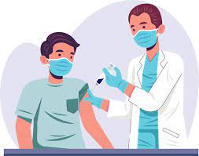

The coronavirus disease 19 (COVID-19) is a highly transmittable and pathogenic viral infection caused by severe acute respiratory syndrome coronavirus 2 (SARS-CoV-2), which emerged in Wuhan, China and spread around the world. Genomic analysis revealed that SARS-CoV-2 is phylogenetically related to severe acute respiratory syndrome-like (SARS-like) bat viruses, therefore bats could be the possible primary reservoir. The intermediate source of origin and transfer to humans is not known, however, the rapid human to human transfer has been confirmed widely.
Vaccines have the ability to save people’s lives. Developing the vaccine for Coronavirus was a huge step to end the pandemic.To begin with, a vaccine will work by mimicking an infectious agent.The agent can be viruses, bacteria or any other microorganisms. They carry the potential of causing disease. When it mimics that, our immune system learns how to respond against it rapidly and efficiently.As a result, our immune system can then identify it quickly and fight against it before it gets the chance to harm us or make us ill.
